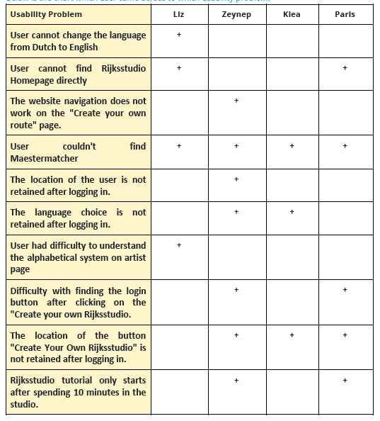

Project: Website user trialling
Duration: 1 month
Team: Zeynep Karakaya, Liz Yau, Klea Keqi, Paris Zachariadis
My Role: Team leader (I was responsible from the planning, execution, analysis and report phase of the project)
Tools: Miro, Zoom, otter.ai, Google Sheets, Google Docs
With this project, our goal was to conduct user testing on rijksstudio.nl website in order to be able to understand how do non-Dutch speaking internationals between ages 19-25 use the website and its functions. To what extent they are facing usability problems, how do they interact with the website’s tools in general.
We have decided to first familarize ourselves with the website to form our research questions and research setup accordingly. Then we moved to executing our research which was followed by the processing and analyzing the data to come up with set of recommendations.
We started out discovering the websites rijksmuseum.com and rijksstudio.nl to have a better understanding of the product, possible difficulties that users may face and also to define our research objectives and setup. We generated a site-map to visualise possible routes that a user can take.
After completing the orientation phase, we have detected some usability problems on the website. Accordingly, we decided to set our research on following research questions:
To be able to find answers to the research questions stated above, we first decided to plan our research through setting up a research plan.
Our research setup as follows:
Due to the Covid-19 restrictions, we conducted the user tests in an online setting. In each interview two team members were present as a test leader to conduct the test and a technical backup and assistance.
We have decided to conduct the user trialling tests on: non-Dutch speaking international people aged between 19-25. This group falls into the target audience of the website, since the Rijksmuseum is one of the well-known tourist spots in Amsterdam. As we planned to conduct 4 user tests in total;
We generated nine main tasks linked with our research questions to follow on user trialling to help us observe and analyse the user behaviours.
We decided to have two different kind of interview questions during the user trialling. We planned to ask some interview questions actually within the user trialling. Those questions are mainly for getting users ready for the test and also learning their first impression and assumptions regarding the Rijksstudio website.
The second kind of the interview questions were asked right after the user test. Those questions aim to understand how was the users’ general experience on the Rijksstudio website, how did they find the features, what changes do they like to make or whether or not they will use the website in the future.
We planned to conduct the tests and interviews on Zoom meeting software and register within the application.
We formed the protocol with the intention of doing the exact same interview with each participant, so that we will be able to analyse the data we gathered. When building the protocol, we aimed to be as detailed as possible and come up with answers to different scenarios that may happen. Moreover, we tried to come up with a sequence of possible hints for each task, so that we would be able to give the same hints related to the task in hand. It consists of dialogues, explanations for ourselves, possible user responses, hints and the remarks we are planning to make.
After setting the research plan, we conducted a pilot test to see if our protocol makes sense and will work for us to find answers to the research questions. We made some changes to improve it before starting the real tests.
After conducting all user tests, we started processing our data in hand. For processing our data, first we each studied our interviews and the notes we have taken through transcripts, user actions on the screen such as mouse clicks and facial/body gestures in order to analyse and answer four research questions. Then each team member distinguished his/her processed data on a different table with regards to the relevant research question. So that we could easily merge and analyze them together later on.
Then we started analysing our processed data per research question. to be able to see the similarities and differences, then look out for trends.
With the help of visualizations we made, we were able to answer each research question. Below is some interesting conclusions we made:
Below is some snapshots from our recommendation list after completing each step in the project:
When looked back the process as a whole, the project was a very nice learning opportunity for me on conducting user trialling with a research team. I had the chance to observe to conduct the exact same user trialling and interview with different test leader and user is not an easy task. As each user is acting very differently, we need more flexible but inclusive protocol to overcome this challenge in the future. Secondly, there should not be a space to interpretation for research team membert on processing the data. Otherwise the data quality won't be the same which might affect the end result of the research. All in all, this was a nice experience for me to do better in future.